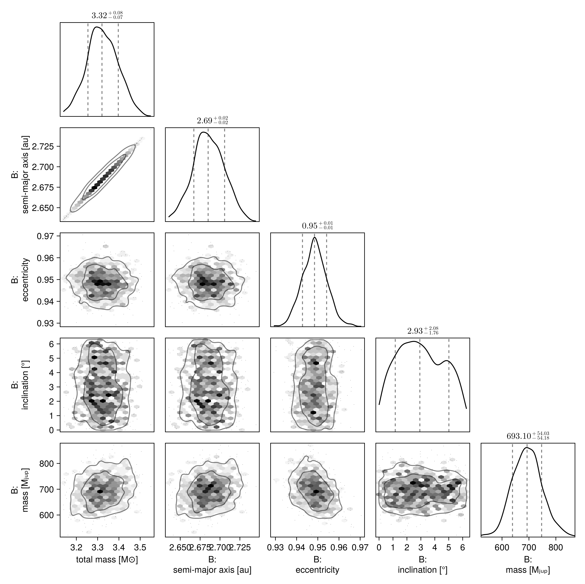
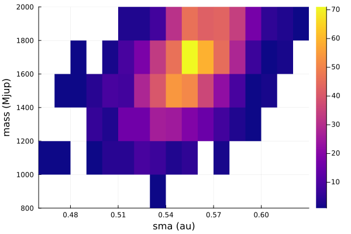

Fit Proper Motion Anomaly
One of the features of Octofitter.jl is support for absolute astrometry aka. proper motion anomaly aka. astrometric acceleration. These data points are typically calculated by finding the difference between a long term proper motion of a star between the Hipparcos and GAIA catalogs, and their proper motion calculated within the windows of each catalog.
For Hipparcos/GAIA this gives four data points that can constrain the dynamical mass & orbits of planetary companions (assuming we subtract out the net trend).
You can specify these quantities manually, but the easiest way is to use the Hipparcos-GAIA Catalog of Accelerations (HGCA, https://arxiv.org/abs/2105.11662). Support for loading this catalog is built into Octofitter.jl.
Let's look at the star and companion HD 91312 A & B, discovered by SCExAO. We will use their published astrometry and proper motion anomaly extracted from the HGCA.
The first step is to find the GAIA source ID for your object. For HD 91312, SIMBAD tells us the GAIA DR2 ID is 756291174721509376 (which we will assume is the same in eDR3).
Planet Model
For this model, we will have to add the variable mass as a prior. The units used on this variable are Jupiter masses, in contrast to M, the primary's mass, in solar masses. A reasonable uninformative prior for mass is Uniform(0,1000) or LogUniform(1,1000) depending on the situation.
Initial setup:
using Octofitter, Distributions, Plots, Randomastrom = PlanetRelAstromLikelihood(
(epoch=mjd("2016-12-15"), ra=133., dec=-174., σ_ra=07.0, σ_dec=07., cor=0.2),
(epoch=mjd("2017-03-12"), ra=126., dec=-176., σ_ra=04.0, σ_dec=04., cor=0.3),
(epoch=mjd("2017-03-13"), ra=127., dec=-172., σ_ra=04.0, σ_dec=04., cor=0.1),
(epoch=mjd("2018-02-08"), ra=083., dec=-133., σ_ra=10.0, σ_dec=10., cor=0.4),
(epoch=mjd("2018-11-28"), ra=058., dec=-122., σ_ra=10.0, σ_dec=20., cor=0.3),
(epoch=mjd("2018-12-15"), ra=056., dec=-104., σ_ra=08.0, σ_dec=08., cor=0.2),
)
@planet B Visual{KepOrbit} begin
a ~ truncated(LogNormal(9,3),lower=0)
e ~ truncated(Normal(0, 0.5), lower=0, upper=1) #Uniform(0,0.9999)
ω ~ UniformCircular()
i ~ Sine() # The Sine() distribution is defined by Octofitter
Ω ~ UniformCircular()
# mass ~ LogNormal(300, 18)
# Anoter option would be:
mass ~ Uniform(0.5, 1000)
τ ~ UniformCircular(1.0)
P = √(B.a^3/system.M)
tp = B.τ*B.P*365.25 + 57737 # reference epoch for τ. Choose an MJD date near your data.
end astromPlanet B
Derived:
ω, Ω, τ, P, tp,
Priors:
a Truncated(Distributions.LogNormal{Float64}(μ=9.0, σ=3.0); lower=0.0)
e Truncated(Distributions.Normal{Float64}(μ=0.0, σ=0.5); lower=0.0, upper=1.0)
ωy Distributions.Normal{Float64}(μ=0.0, σ=1.0)
ωx Distributions.Normal{Float64}(μ=0.0, σ=1.0)
i Sine()
Ωy Distributions.Normal{Float64}(μ=0.0, σ=1.0)
Ωx Distributions.Normal{Float64}(μ=0.0, σ=1.0)
mass Distributions.Uniform{Float64}(a=0.5, b=1000.0)
τy Distributions.Normal{Float64}(μ=0.0, σ=1.0)
τx Distributions.Normal{Float64}(μ=0.0, σ=1.0)
Octofitter.UnitLengthPrior{:ωy, :ωx}: √(ωy^2+ωx^2) ~ LogNormal(log(1), 0.02)
Octofitter.UnitLengthPrior{:Ωy, :Ωx}: √(Ωy^2+Ωx^2) ~ LogNormal(log(1), 0.02)
Octofitter.UnitLengthPrior{:τy, :τx}: √(τy^2+τx^2) ~ LogNormal(log(1), 0.02)
PlanetRelAstromLikelihood Table with 6 columns and 6 rows:
epoch ra dec σ_ra σ_dec cor
┌─────────────────────────────────────────
1 │ 57737.0 133.0 -174.0 7.0 7.0 0.2
2 │ 57824.0 126.0 -176.0 4.0 4.0 0.3
3 │ 57825.0 127.0 -172.0 4.0 4.0 0.1
4 │ 58157.0 83.0 -133.0 10.0 10.0 0.4
5 │ 58450.0 58.0 -122.0 10.0 20.0 0.3
6 │ 58467.0 56.0 -104.0 8.0 8.0 0.2
System Model & Specifying Proper Motion Anomaly
Now that we have our planet model, we create a system model to contain it.
@system HD91312 begin
M ~ truncated(Normal(1.61, 0.1), lower=0)
plx ~ gaia_plx(gaia_id=756291174721509376)
# Priors on the centre of mass proper motion
pmra ~ Normal(-137, 10)
pmdec ~ Normal(2, 10)
end HGCALikelihood(gaia_id=756291174721509376) BSystem model HD91312
Derived:
Priors:
M Truncated(Distributions.Normal{Float64}(μ=1.61, σ=0.1); lower=0.0)
plx Truncated(Distributions.Normal{Float64}(μ=29.14532470703125, σ=0.1407301127910614); lower=0.0)
pmra Distributions.Normal{Float64}(μ=-137.0, σ=10.0)
pmdec Distributions.Normal{Float64}(μ=2.0, σ=10.0)
Planet B
Derived:
ω, Ω, τ, P, tp,
Priors:
a Truncated(Distributions.LogNormal{Float64}(μ=9.0, σ=3.0); lower=0.0)
e Truncated(Distributions.Normal{Float64}(μ=0.0, σ=0.5); lower=0.0, upper=1.0)
ωy Distributions.Normal{Float64}(μ=0.0, σ=1.0)
ωx Distributions.Normal{Float64}(μ=0.0, σ=1.0)
i Sine()
Ωy Distributions.Normal{Float64}(μ=0.0, σ=1.0)
Ωx Distributions.Normal{Float64}(μ=0.0, σ=1.0)
mass Distributions.Uniform{Float64}(a=0.5, b=1000.0)
τy Distributions.Normal{Float64}(μ=0.0, σ=1.0)
τx Distributions.Normal{Float64}(μ=0.0, σ=1.0)
Octofitter.UnitLengthPrior{:ωy, :ωx}: √(ωy^2+ωx^2) ~ LogNormal(log(1), 0.02)
Octofitter.UnitLengthPrior{:Ωy, :Ωx}: √(Ωy^2+Ωx^2) ~ LogNormal(log(1), 0.02)
Octofitter.UnitLengthPrior{:τy, :τx}: √(τy^2+τx^2) ~ LogNormal(log(1), 0.02)
PlanetRelAstromLikelihood Table with 6 columns and 6 rows:
epoch ra dec σ_ra σ_dec cor
┌─────────────────────────────────────────
1 │ 57737.0 133.0 -174.0 7.0 7.0 0.2
2 │ 57824.0 126.0 -176.0 4.0 4.0 0.3
3 │ 57825.0 127.0 -172.0 4.0 4.0 0.1
4 │ 58157.0 83.0 -133.0 10.0 10.0 0.4
5 │ 58450.0 58.0 -122.0 10.0 20.0 0.3
6 │ 58467.0 56.0 -104.0 8.0 8.0 0.2
HGCALikelihood Table with 35 columns and 1 row:
hip_id gaia_source_id gaia_ra gaia_dec radial_velocity ⋯
┌──────────────────────────────────────────────────────────────────
1 │ 51658 756291174721509376 158.307 40.4256 9.0 ⋯
We specify priors on M and plx as usual, but here we use the gaia_plx helper function to read the parallax and uncertainty directly from the HGCA using its source ID.
We also add parameters for the long term system's proper motion. This is usually close to the long term trend between the Hipparcos and GAIA measurements.
After the priors, we add the proper motion anomaly measurements from the HGCA. If this is your first time running this code, you will be prompted to automatically download and cache the catalog which may take around 30 seconds.
Sampling from the posterior
Sample from our model as usual:
model = Octofitter.LogDensityModel(HD91312)
Random.seed!(1)
chain = octofit(model)Chains MCMC chain (1000×32×1 Array{Float64, 3}):
Iterations = 1:1:1000
Number of chains = 1
Samples per chain = 1000
Wall duration = 97.08 seconds
Compute duration = 97.08 seconds
parameters = M, plx, pmra, pmdec, B_a, B_e, B_ωy, B_ωx, B_i, B_Ωy, B_Ωx, B_mass, B_τy, B_τx, B_ω, B_Ω, B_τ, B_P, B_tp
internals = n_steps, is_accept, acceptance_rate, hamiltonian_energy, hamiltonian_energy_error, max_hamiltonian_energy_error, tree_depth, numerical_error, step_size, nom_step_size, is_adapt, loglike, logpost, tree_depth, numerical_error
Summary Statistics
parameters mean std mcse ess_bulk ess_tail rhat ⋯
Symbol Float64 Float64 Float64 Float64 Float64 Float64 ⋯
M 3.3229 0.0723 0.0019 1452.6168 663.7903 1.0003 ⋯
plx 30.2552 0.1437 0.0034 1750.7969 568.7888 1.0016 ⋯
pmra -137.6356 0.0201 0.0006 1123.3062 739.0498 1.0020 ⋯
pmdec 1.8857 0.0121 0.0004 1030.4344 625.3658 1.0001 ⋯
B_a 2.6858 0.0195 0.0005 1453.3087 663.7903 1.0002 ⋯
B_e 0.9485 0.0058 0.0002 740.2198 431.3490 1.0007 ⋯
B_ωy 0.2478 0.8846 0.1674 39.9237 231.1079 0.9996 ⋯
B_ωx 0.0148 0.3935 0.0205 391.2277 272.8452 1.0105 ⋯
B_i 0.1048 0.0735 0.0030 448.3949 333.6742 1.0003 ⋯
B_Ωy 0.1932 0.7570 0.1362 48.2647 351.8288 1.0002 ⋯
B_Ωx -0.1573 0.6060 0.0997 53.9304 406.9772 0.9990 ⋯
B_mass 694.0597 55.0886 2.1538 651.0780 629.3421 1.0017 ⋯
B_τy -0.8599 0.0170 0.0005 1029.3646 573.6428 1.0005 ⋯
B_τx -0.5138 0.0104 0.0003 985.3042 588.6008 1.0000 ⋯
B_ω 0.0346 1.7458 0.0682 549.0542 198.1600 1.0037 ⋯
B_Ω 0.3041 1.6062 0.2499 69.6845 308.9762 0.9993 ⋯
B_τ -0.4143 0.0003 0.0000 775.0508 441.7075 1.0017 ⋯
⋮ ⋮ ⋮ ⋮ ⋮ ⋮ ⋮ ⋱
1 column and 2 rows omitted
Quantiles
parameters 2.5% 25.0% 50.0% 75.0% 97.5%
Symbol Float64 Float64 Float64 Float64 Float64
M 3.1839 3.2751 3.3204 3.3725 3.4661
plx 29.9691 30.1598 30.2580 30.3499 30.5261
pmra -137.6744 -137.6494 -137.6356 -137.6223 -137.5962
pmdec 1.8619 1.8777 1.8860 1.8939 1.9080
B_a 2.6480 2.6729 2.6851 2.6995 2.7240
B_e 0.9375 0.9446 0.9484 0.9522 0.9603
B_ωy -1.0171 -0.9304 0.8898 0.9811 1.0201
B_ωx -0.8885 -0.2051 -0.0020 0.2142 0.9077
B_i 0.0132 0.0483 0.0862 0.1481 0.2794
B_Ωy -0.9942 -0.7186 0.6353 0.8467 0.9918
B_Ωx -0.9766 -0.6482 -0.3978 0.4910 0.9175
B_mass 592.4748 656.3374 693.1007 728.9138 808.2080
B_τy -0.8941 -0.8713 -0.8603 -0.8481 -0.8269
B_τx -0.5348 -0.5209 -0.5137 -0.5068 -0.4928
B_ω -3.0919 -0.3738 -0.0020 0.5599 3.1060
B_Ω -2.5169 -0.7387 -0.4469 2.2544 2.9034
B_τ -0.4150 -0.4145 -0.4143 -0.4140 -0.4136
B_P 2.4142 2.4145 2.4147 2.4150 2.4155
B_tp 57371.0391 57371.4058 57371.6147 57371.8143 57372.2191
This takes about a minute on the first run due to JIT startup latency; subsequent runs are very quick even on e.g. an older laptop.
Analysis
The first step is to look at the table output above generated by MCMCChains.jl. The rhat column gives a convergence measure. Each parameter should have an rhat very close to 1.000. If not, you may need to run the model for more iterations or tweak the parameterization of the model to improve sampling. The ess column gives an estimate of the effective sample size. The mean and std columns give the mean and standard deviation of each parameter.
The second table summarizes the 2.5, 25, 50, 75, and 97.5 percentiles of each parameter in the model.
Another useful plotting function is octoplot which takes similar arguments and produces a 9 panel plot:
octoplot(model, chain)
Pair Plot
If we wish to examine the covariance between parameters in more detail, we can construct a pair-plot (aka. corner plot).
For a quick look, you can just run octocorner(model, chain), but for more control output you may wish to customize the labels, units, unit labels, etc. See the documentation of PairPlots.jl for more details.
# Create a corner plot / pair plot.
# We can access any property from the chain specified in Variables
using CairoMakie: Makie
using PairPlots
octocorner(model, chain, small=true)
Fitting Astrometric Acceleration Only
If you wish to look at the possible locations/masses of a planet around a star using onnly GAIA/HIPPARCOS, you can follow a simplified approach.
As a start, you can restrict the orbital parameters to just semi-major axis, epoch of periastron passage, and mass.
@planet B Visual{KepOrbit} begin
a ~ LogUniform(0.1, 100)
mass ~ LogUniform(1, 2000)
i = 0
e = 0
Ω = 0
ω = 0
τ ~ UniformCircular(1.0)
P = √(B.a^3/system.M)
tp = B.τ*B.P*365.25 + 57737 # reference epoch for τ. Choose an MJD date near your data.
end
@system HD91312 begin
M ~ truncated(Normal(1.61, 0.2), lower=0)
plx ~ gaia_plx(gaia_id=756291174721509376)
# Priors on the centre of mass proper motion
pmra ~ Normal(0, 500)
pmdec ~ Normal(0, 500)
end HGCALikelihood(gaia_id=756291174721509376) BSystem model HD91312
Derived:
Priors:
M Truncated(Distributions.Normal{Float64}(μ=1.61, σ=0.2); lower=0.0)
plx Truncated(Distributions.Normal{Float64}(μ=29.14532470703125, σ=0.1407301127910614); lower=0.0)
pmra Distributions.Normal{Float64}(μ=0.0, σ=500.0)
pmdec Distributions.Normal{Float64}(μ=0.0, σ=500.0)
Planet B
Derived:
i, e, Ω, ω, τ, P, tp,
Priors:
a Distributions.LogUniform{Float64}(a=0.1, b=100.0)
mass Distributions.LogUniform{Int64}(a=1, b=2000)
τy Distributions.Normal{Float64}(μ=0.0, σ=1.0)
τx Distributions.Normal{Float64}(μ=0.0, σ=1.0)
Octofitter.UnitLengthPrior{:τy, :τx}: √(τy^2+τx^2) ~ LogNormal(log(1), 0.02)
HGCALikelihood Table with 35 columns and 1 row:
hip_id gaia_source_id gaia_ra gaia_dec radial_velocity ⋯
┌──────────────────────────────────────────────────────────────────
1 │ 51658 756291174721509376 158.307 40.4256 9.0 ⋯
This models assumes a circular, face-on orbit.
model = Octofitter.LogDensityModel(HD91312; autodiff=:ForwardDiff, verbosity=4) # defaults are ForwardDiff, and verbosity=0
Random.seed!(1)
chain = octofit(model)Chains MCMC chain (1000×28×1 Array{Float64, 3}):
Iterations = 1:1:1000
Number of chains = 1
Samples per chain = 1000
Wall duration = 62.8 seconds
Compute duration = 62.8 seconds
parameters = M, plx, pmra, pmdec, B_a, B_mass, B_τy, B_τx, B_i, B_e, B_Ω, B_ω, B_τ, B_P, B_tp
internals = n_steps, is_accept, acceptance_rate, hamiltonian_energy, hamiltonian_energy_error, max_hamiltonian_energy_error, tree_depth, numerical_error, step_size, nom_step_size, is_adapt, loglike, logpost, tree_depth, numerical_error
Summary Statistics
parameters mean std mcse ess_bulk ess_tail rha ⋯
Symbol Float64 Float64 Float64 Float64 Float64 Float6 ⋯
M 1.5925 0.1932 0.0076 649.6189 737.3724 1.003 ⋯
plx 29.1483 0.1382 0.0039 1218.8283 451.5431 1.001 ⋯
pmra -137.6510 0.0197 0.0007 912.7716 626.4403 1.005 ⋯
pmdec 1.8889 0.0126 0.0004 899.1433 609.2531 1.000 ⋯
B_a 0.5533 0.0226 0.0009 649.6511 737.3724 1.003 ⋯
B_mass 1620.6890 216.2415 11.9172 275.3038 200.3348 1.003 ⋯
B_τy -0.9727 0.0241 0.0008 854.6640 740.2345 0.999 ⋯
B_τx -0.2214 0.0677 0.0026 724.4692 545.7833 0.999 ⋯
B_i 0.0000 0.0000 NaN NaN NaN Na ⋯
B_e 0.0000 0.0000 NaN NaN NaN Na ⋯
B_Ω 0.0000 0.0000 NaN NaN NaN Na ⋯
B_ω 0.0000 0.0000 NaN NaN NaN Na ⋯
B_τ -0.4544 0.0962 0.0042 870.0900 755.8018 0.999 ⋯
B_P 0.3270 0.0001 0.0000 691.8289 904.9495 0.999 ⋯
B_tp 57682.7337 11.4854 0.4979 868.4540 755.8018 0.999 ⋯
2 columns omitted
Quantiles
parameters 2.5% 25.0% 50.0% 75.0% 97.5%
Symbol Float64 Float64 Float64 Float64 Float64
M 1.2111 1.4659 1.5892 1.7211 1.9626
plx 28.8732 29.0553 29.1478 29.2443 29.4257
pmra -137.6916 -137.6648 -137.6506 -137.6373 -137.6154
pmdec 1.8659 1.8800 1.8888 1.8974 1.9137
B_a 0.5059 0.5391 0.5539 0.5688 0.5942
B_mass 1170.1380 1463.0841 1637.7301 1792.4403 1962.4472
B_τy -1.0205 -0.9890 -0.9720 -0.9563 -0.9271
B_τx -0.3362 -0.2696 -0.2272 -0.1797 -0.0747
B_i 0.0000 0.0000 0.0000 0.0000 0.0000
B_e 0.0000 0.0000 0.0000 0.0000 0.0000
B_Ω 0.0000 0.0000 0.0000 0.0000 0.0000
B_ω 0.0000 0.0000 0.0000 0.0000 0.0000
B_τ -0.4848 -0.4709 -0.4632 -0.4561 -0.4436
B_P 0.3269 0.3269 0.3270 0.3270 0.3271
B_tp 57679.1059 57680.7660 57681.6877 57682.5217 57684.0273
With such simple models, the mean tree depth is often very low and sampling proceeds very quickly.
A good place to start is a histogram of planet mass vs. semi-major axis:
Plots.histogram2d(chain["B_a"], chain["B_mass"], color=:plasma, xguide="sma (au)", yguide="mass (Mjup)")
You can also visualize the orbits and proper motion:
octoplot(model, chain)